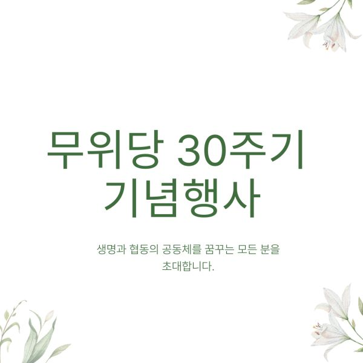
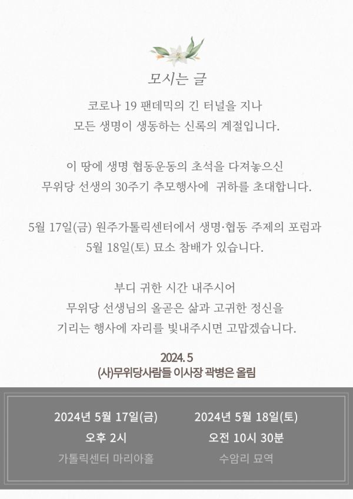
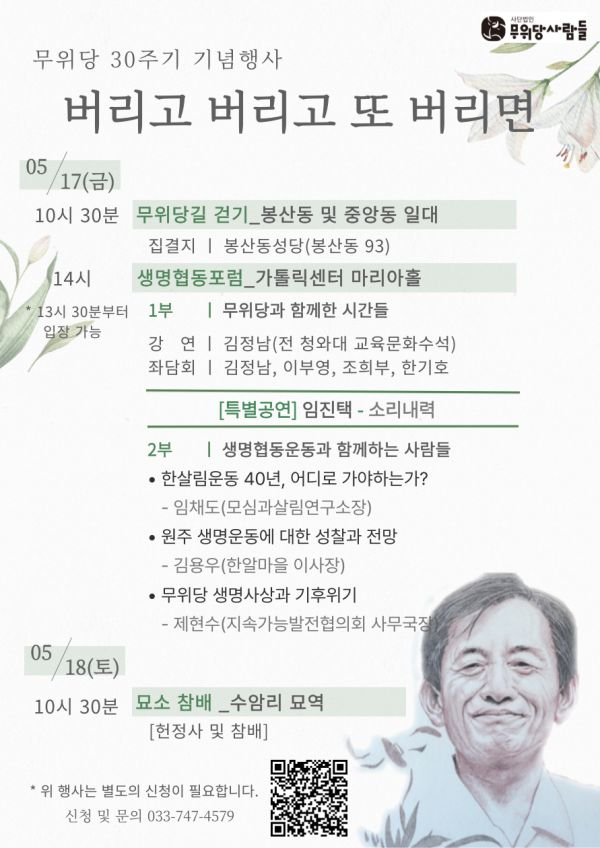
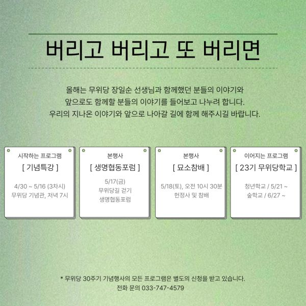
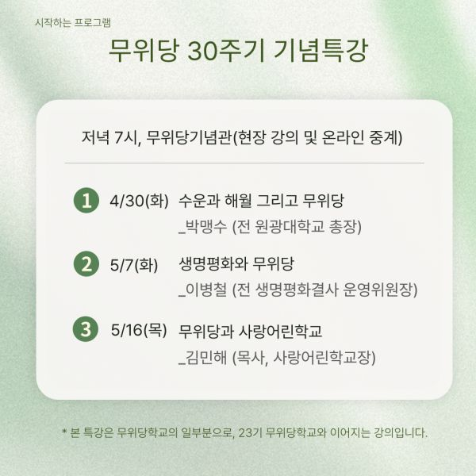
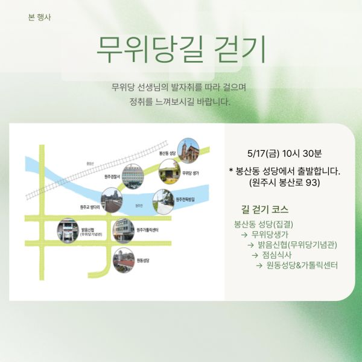
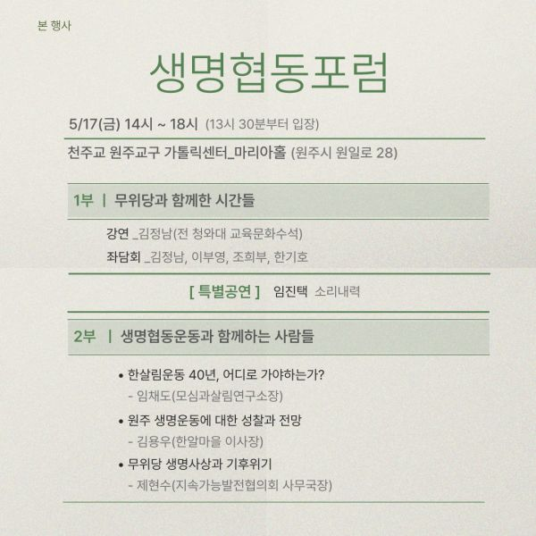
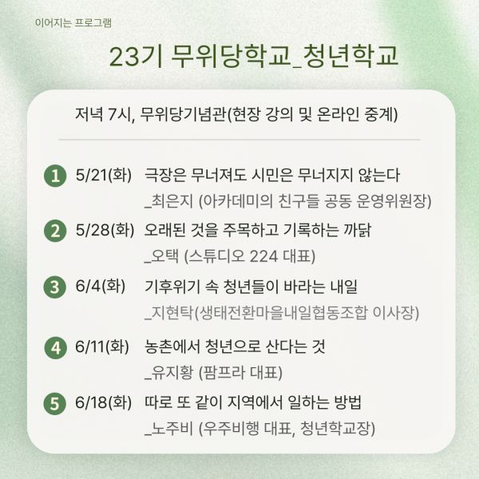
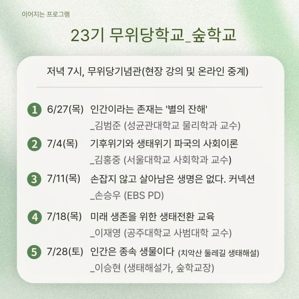

♧무위당 30주기 행사안내
5월 17일(금)-18일(토) 무위당 장일순 선생 선종 30주기를 기념하여 행사를 마련했습니다.
아름다운 생명과 협동의 공동체를 꿈꾸는 분들이 모여 지난 시간을 되돌아보고 현재 우리의 선자리를 고민해보자 자리를 마련했습니다.
♧17일 금요일 오전 10시 30분에는 무위당 선생이 늘 다니셨던 봉산동 성당에서 모여 그 시절을 생각하며 무위당 선생을 감시했던 파출소, 생가, 뚝방길, 무위당기념관, 원동성당, 가톨릭센터 등을 돌아보는 <무위당 길걷기>행사가 진행됩니다.
♧17일 금요일 오후 2시부터는 지학순 주교님과 함께 70년대 80년대 생활성서운동, 민주화운동, 신협운동이 펼쳐젔던 전국 최초의 가톨릭센터에서 본행사가 열립니다.
1부는 한국 민주화운동의 산증인이신 김정남 선생을 모시고 강연을 듣고 이어서 자유언론 운동의 대부 이부영 선생, 고요한 소리대표 한기호 선생, 괴산한살림 조희부 선생을 모시고 무위당과 함께한 시간을 주제로 좌담회를 준비했습니다.
현장에 참석하신 원로분들의 말씀도 들어볼 예정입니다.
또한 좌담회 이후 김지하 선생과 함께 민중문화운동을 펼치고 한국 마당극을 처음 시작하신 임진택 선생의 <소리내역>공연이 있습니다.
2부는 현재 생명협동운동의 현장에서 활동중인 분들의 시간을 마련했습니다. 우선 무위당 선생의 큰 유산인 한살림의 미래를 말씀해주실 <모심과살림연구소> 임채도 소장, 원주협동운동을 성찰해주실 <한알마을> 공부모임의 김용우 선생, 환경생태 기후문제를 말씀해주실 <지속가능협의회> 제현수 선생을 모셨습니다. 그리고 현장에서 미래세대의 젊은 지역운동가들의 의견도 들어볼 계획입니다. 그리고 저녁식사후 전국에서 모인 후학들은 <치악산한증원>에 모여 못다한 애기, 하고싶은 애기를 풀어볼 예정입니다.
♧5월 18일 토요일은 아침식사후 10시30분 원주시 소초면에 있는 무위당 묘소에 모입니다. 몇분의 말씀과 함께 무위당 30주기를 맞아 출판된 <무위당평전>의 헌정식이 있습니다. 작가는 지학순 평전을 쓰셨던 <가톨릭뉴스> 한상봉 선생으로 평전의 후일담을 들어볼 예정입니다. 참배후에는 막국수집에서 점심후 내년을 기약하며 마무리합니다.
부족하지만 마음으로 준비했습니다.
많은 관심과 참여 부탁합니다.
무위당 30주기 기념행사는 원활한 진행을 위해 참가 신청을 받습니다.